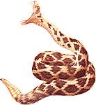
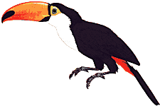
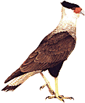

Memorias de un Viaje Fantástico
- Parte 1
Realizamos con mi familia
- matrimonio y 3 chicos - un "Safari Naturalístico" organizado
por Aves Argentinas / Asociación Ornitológica del Plata (AOP)
a la provincia de Misiones para ver aves, conocer la selva bien de cerca,
y vivir las asombrosas cataratas de Iguazú. Este es el relato de esa
experiencia inolvidable.
PARTE I
El viaje de ida, Salto Encantado y la estadía de tres días en
Moconá.
Técnica de avistaje de aves.
Edición revisada 24/5/2006
Accesos Rápidos:
Sábado
24 - De Buenos Aires hasta la Selva Encantada
Partimos de Buenos Aires el Sábado 24 de Julio de 1999, a media mañana. Un
micro colmado con unos 50 pasajeros, entre los que se encontraban nuestros guías
de Aves Argentinas, Germán Pugnali y Hernán Rodríguez Goñi,
además de cocineros y asistentes del campamento. Los campamentistas estábamos
conformados por un grupo muy heterogéneo: niños, biólogos,
médicos, personas mayores, en fin, un poco de todo. Para algunos, como
mi familia, era el primer viaje a Misiones; para otros no, pero todos compartíamos
la inquietud del descubrimiento, ya sea de un nuevo lugar, descubrir la fauna
y nuevas especies de aves, o la primera experiencia en campamento.
El plan era visitar dos localidades de Misiones: Moconá, sobre el río
Uruguay, y el área de Iguazú, incluyendo una visita a los fabulosos
saltos.
El viaje en el cómodo micro nos llevó hacia el Norte, mientras todos,
muy concentrados, leíamos un interesante apunte técnico sobre flora
y fauna de la selva, preparado por la AOP y entregado a cada pasajero. Luego de
tres paradas de descanso en la ruta, y tras ver un par de videos, nos dispusimos
a intentar dormir durante el tramo nocturno. No era fácil. Es que en muy
pocas horas, antes del amanecer, estaríamos ya transitando caminos bordeados
por la misteriosa selva misionera. Una hora más tarde yo seguía
esforzándome en mirar por la ventana, pero sólo veía oscuridad.
Sin embargo mi imaginación vió de todo. Recordaba cuando, de niño,
llegaba de noche a un paraje en la Cordillera de los Andes, en mi primera visita
a esa región. Allí nomás estaban las inmensas moles montañosas,
pero a causa de la oscuridad no podría verlas hasta la llegada de la luz,
el día siguiente. ¡Que ansiedad! Y esto, era igual.
Domingo
25 
Salto Encantado
Mucho antes del amanecer el micro se detuvo en la primera escala ornitológica
del viaje: estábamos un Salto Encantado, un paraje exótico junto
a la ciudad de Aristóbulo del Valle, en el corazón de Misiones.
Apenas llegamos, y sin un minuto de demora, abandonamos el calefaccionado ambiente
del ómnibus debidamente ataviados para enfrentar la fresca madrugada. Con
linterna y binoculares en mano, seguiríamos a nuestro guía, Germán,
en una atrapante cacería nocturna de lechuzas. Cacería es una manera
de decir, por supuesto, ya que nuestro fin sería solo de observarlas, o
al menos detectar su presencia por sus vocalizaciones. Recorrimos las inmediaciones
del parque durante más de una hora. Haciendo el más absoluto silencio,
repetimos una y otra vez, hasta el cansancio, las voces grabadas de las especies
más probables de encontrar allí, esperando oír una contestación,
pero lamentablemente no tuvimos eco. Vimos una Comadreja Orejas Negras, que se
alejó rápidamente, pero nada de lechuzas. Una sola respuesta desde
la aún oscura selva habría entibiado nuestras almas, al decirnos:
“Todavía anda una de nosotras por aquí”. Pero no ocurrió,
así que el grupo tuvo que encontrar ese calor en una taza de café,
amablemente servida en el quincho por los dedicados cuidadores del lugar.
Llegaba el amanecer. Un valle, una
caverna dispuesta en sentido vertical y una delgada catarata, todo a la vez,
se fue dibujando ante nuestros ojos a medida que la luz del día se intensificaba
lentamente. Las aguas del pequeño y encantador arroyo que avanzaba hacia
el precipicio ciertamente no estaban preparadas para afrontar tan violento destino.
El arroyo derrama en un oscuro valle bordeado de roca y vegetación selvática.
En la penumbra, y con la luz artificial con que cuenta el salto, se genera un
aura fantástica. En esas condiciones, la mente complementa lo que aún
no puede verse, llenando los huecos con aportes que brotan de la imaginación,
intensificando así el misterio del lugar. Es la manera de ver esos saltos:
al alba. Desde el mirador observamos la cascada mientras hacía
su aparición nuestra primera especie de ave misionera: un Trepador Garganta
Blanca (Xiphocolaptes albicollis dicen los entendidos). Estuvimos a la
hora correcta para presenciar la huida de los vencejos de sus empapados dormideros
detrás de la cortina de agua, osadamente colgados en la roca vertical.
Y la selva comenzó a cobrar vida, con el surgimiento sutil de diversas
voces de aves, aquí y allá. Se vieron varias especies, pero ya
algo me empezaba a indicar que, en esta selva, no iba a ser fácil incorporar
nuevos nombres a mi lista de aves.
Nuevo y
Difícil Entorno
En efecto, en las selvas de Misiones habita una enorme variedad de aves, alrededor
de 500 especies, y muchas de ellas serían nuevas para mis ojos y oídos:
sus colores, las voces, los hábitos, en fin, todo lo que el observador
utiliza para llegar a identificar las especies. De poco servirían aquí
mis conocimientos de las aves de Buenos Aires. Y el desarrollo vertical de la
selva determinaría que muchos avistajes serían a distancias considerables,
y a veces a contraluz, o escondidos en la vegetación tupida. ¡Cuán
difícil sería esto! Cuán distinto de la práctica
mucho más fácil, a la que yo estaba acostumbrado, de observar aves en
las pampas o en un bañado. Había subestimado la preparación
previa necesaria para aprovechar mejor este viaje.
Para contar aquí el final
de la historia, puedo decir que, tras una semana de selva, regresé a
Buenos Aires con un “bagaje” de conocimientos que aprendí en el campo,
durante el safari. No creo que hubiera podido asimilar ese aprendizaje simplemente
leyendo y releyendo las guías, oyendo las cintas de los cantos o memorizando
nombres. Hay que estar ahí. Se aprende a afinar el sentido de la visión,
pero sobre todo, del oído - por que frecuentemente se oyen las aves,
pero no siempre se ven. Hay que vivir la experiencia de cómo la selva
dosifica sus secretos con cuentagotas. Y de pronto, expone ante uno aquel ser
alado de colores estupendos, y que, tras una consulta en la guía para
darle nombre, quedaría registrado en el alma, donde el olvido no existe...
Pero, más probablemente, el pájaro
avistado sería: marrón, inquieto, y... ¡Ya se fue! En la
guía hay 30 o 40 especies parecidas, de diversas familias, y en esos
casos no lograría ni siquiera “arrimar el bochín”. Otro cantito
allá... Pero no se muestra. Cien metros más adelante, otro cantito...
un movimiento... un avistaje. Es casi igual, algo distinto. ¿Cuál
será?
Me fui dando cuenta que, en la selva, la gran variedad de especies distintas
no implicaba siempre una gran abundancia de aves. Todo lo contrario: había
una cierta escasez, incluso de las especies más comunes. Pero había
un lado bueno: prácticamente no habría figuritas repetidas: con
cada avistaje tendría la probabilidad de agregar nuevas especies a mi
lista – siempre que logre identificarlas! Y para ello sería imprescindible
la ayuda de los guías.
¿Cuento el final otra vez?
La realidad es que una semana de selva alcanzó apenas para comenzar a
conocer ciertos grupos como los marroncitos Ticoticos y Picolenzas que no conocía
anteriormente. Tratar de identificarlos por mi cuenta queda como un desafío
para otra visita. Pero a la vuelta, me costaba creer que había visto
personalmente casi 150 especies de aves. Por eso recorrí mi lista una
y otra vez, totalizando cantidades y llegando, curiosamente, siempre a la misma
suma. Pero puedo contar un dato más positivo. Antes del viaje leí
dos veces un capítulo del “Manual del Observador de Aves” (Narosky /
Bosso), sobre las aves de la selva, escrito por J. C. Chébez. Al leerlo
por primera vez, no conocía ninguna de las especies allí mencionadas.
Consulté mi guía para profundizar la lectura, hice resúmenes,
y volví a leer el mismo capítulo. Pero los nombres de las especies
seguían siendo tan misteriosos como en la primera lectura. Pero de regreso
del viaje leí otra vez el texto. Y ahora era pura música. Me sentía
familiarizado con todas las especies citadas. Seguramente mi esfuerzo de estudio
había aportado algo, pero el viaje al lugar fue lo que generó
el verdadero aprendizaje.
Peripecias
Misioneras
El micro se dirigía ahora hacia el Norte, y en 2 horas estaríamos
en San Pedro. Allí todo el contenido de sus grandes bauleras sería
transbordado a otros 4 vehículos, capaces de realizar el trayecto más
difícil hasta Moconá, situado a orillas del río Uruguay
a unos 80 km por camino de tierra. En San Pedro esperaba entonces un autobús,
que a primera vista ya indicaba su condición de “vaqueano”. Junto a él,
dos LandRover 4x4 serían los móviles “expreso”, y se sumaba un
pequeño camión, en el cual serían trasladados carpas, comida,
cocina, garrafas, ollas, valijas y demás enseres que formarían
parte de nuestro sustento durante los próximos 3 o 4 días.
Organizamos una cadena humana para movilizar la mayoría de los bultos.
Mientras ayudábamos a acomodar, mi hijo Nicolás as acomodó
al frente de la cola para realizar la travesía en un 4x4, y consiguió
su plaza. Junto al resto de mi familia subimos al destartalado colectivo misionero,
y al rato ingresábamos, emocionados, en un camino de tierra colorada,
donde el cartel de la ruta marcaba simplemente “Saltos del Moconá”. El
sentido de aventura nos invadía, reforzado por el intenso contraste entre
el verde brillante de la selva y el rojo-naranja de las tierras. El aspecto
surrealista quizás fue magnificado por el sueño que sentía,
dadas las pocas horas dormidas. O no...
Pero, me preguntaba: ¿Ese
bosquecillo interminable de arboles y palmeras, enmarañado con lianas
y cañas, eso era la verdadera selva? ¿No se supone que debería
haber grandes arboles, cuyas ramas altas, con hojas, formarían un tupido
techo contínuo, llamado “dosel” a 20 o 25m de altura, creando la oscura
sombra del sotobosque inferior? Un dosel solamente interrumpido por los gigantes,
aquellos arboles que se habían destacado por sobre sus hermanos, para
convertirse en lo que los textos llamaban “emergentes”. Eso es lo que decían
las diversas descripciones que había leído de la selva paranaense.
Pero aquí no había dosel. ¿Cuando lo vería?
Lamentablemente aquí debo contar el final: nunca vi un verdadero dosel.
La razón es que muchos bosques de la región ya han sido víctimas
de la extracción maderera. Perdón, hablo de los bosques de un
Parque Provincial (Moconá) y de un Parque Nacional (Iguazú). Es
que la protección llegó demasiado tarde. La provincia de Misiones
toda es como un huerto, donde se han cosechado las mejores piezas, y se ha dejado
solo lo que no sirve. Los grandes arboles no existen más. La selva es
un Gruyere de claros o “capueras”, lugares donde han brotado diversas cañas
y arbustos que, si bien son autóctonos, invaden de manera tal que dificulta
la recuperación de la selva a su estado original.
Guatambú, Pitiribí, Lapacho,... la lista es interminable. Para
mí, hace una semana, esos eran todos nombres de maderas. Ahora, conmocionado,
me doy cuenta que todos son nombres de arboles. De especies autóctonas
que se cosechan de la selva sin replantar. Quedan todavía estos arboles,
pero cada vez hay menos, y son los más pequeños.
De repente, en el medio de la selva,
apareció una inmensa plantación de pinos. Ahí la selva
seguramente fue quemada, y se plantaron estas especies exóticas, es decir,
que no pertenecen aquí. En las fotos satelitales esas áreas igualmente
aparecen como tupidas selvas, pero no lo son. En realidad son "desiertos
verdes", de donde queda excluida toda la biodiversidad misionera.
Vimos pasar estos paisajes a una
increíble velocidad, gracias a la pericia y alocada habilidad de nuestro
nuevo conductor. Cuando subí al micro en San Pedro estaba ya sentado
al volante. Apenas observé su sonrisa ancha y desenfrenada, me pareció
contar ya con suficiente información para arriesgar una descripción
de su personalidad, y de cómo manejaría... ¡Y no me equivoqué!
El camino era serrano, cubierto de esa patinosa y peligrosa barrotina marrón
anaranjada. Pero... ya sea en subida o en bajada, exista o no una cerrada curva,
alto precipicio, angosto puente de leños o pantanoso barreal, o cualquier
combinación de todos estos, nuestro micro igualmente avanzaba a lo que
parecía ser la máxima velocidad que brindaba su mecánica.
Un rebaje aquí, por que había un bache conocido, y luego de nuevo
la alocada carrera.
Así avanzamos una mitad del
camino, hasta que llegamos a un bache embarrado que quizás superaba las
posibilidades del vehículo. Parecía muy difícil de cruzar.
Todos abajo. El conductor cató el barreal con su pié descalzo,
¡y luego se mandó! Casi enseguida vimos que las ruedas delanteras
se presentaban muy torcidas, y pasó lo que temíamos. Pude sacar
una foto del micro empantanado. Pensé: ¡mi hijo había acertado
al tomar la 4x4!
Las perspectivas de sacar el micro del barro parecían muy poco probables.
Tras un análisis de la situación llegamos a la conclusión
que, solos, nada podíamos hacer. Había que buscar ayuda.
Nuestro chofer salió a pié,
hacia un obrador que habíamos pasado recién. Volvió unos
minutos después, y anunció que esperaba pronto el arribo de un
vehículo de auxilio. Razonemos: el viaje ya había sido demencial,
pero pensar que en ese desolado paraje llegaría un vehículo de
salvamento, así como así, era totalmente descabellado. Pero el
milagro se produjo, ya que, puntualmente a los 5 minutos, del otro lado de la
loma, apareció el poderoso camión que lograría sacar el
autobús. Tirando hacia atrás, desenterró al micro de eso
que parecía más bien una mezcla de chocolate y dulce de leche.
El cruce del bache fue conseguido
en el segundo intento, gracias a un enfurecido embale del micro, humeante y
ruidoso. En un momento realizó una barrenada oblicua, salpicando barro
y largando mucho humo. Luego hubo un repentino engrane de las alisadas cubiertas
al pisar tierra firme. Luego más ruido del motor para enfrentar la segunda
parte del barreal, y una coleada para el otro lado. Todo este salvaje espectáculo
fue coronado con el colorido grito de “arriada” que emitió nuestro guía,
mientras revoleaba su campera disfrutando enormemente de la escena de acción,
mientras yo, temiendo un catastrófico vuelco, fruncía los hombros
y la vista, mordiendo hasta el punto de desgarro de la musculatura mandibular.
"Uiiiiiiiiiijaaaaaaaa!!!...".
Durante esta maniobra, los pasajeros
nos habíamos apostado a una distancia prudencial del camino, puesto que,
conociendo ya la sangre del conductor, se había pronosticado la posibilidad
de todo tipo de despistes y vuelcos. Pero habíamos subestimado su verdadera
pericia, ya que no pasó nada de esto.
Luego del cruce, a inspeccionar los
daños del paragolpes delantero, que se había clavado en el suelo
al atravesar el barreal. El camión de comida, que nos había alcanzado,
también hizo su cruce no menos espectacular, y por suerte no hubo que
lamentar víctimas.
Y de nuevo se reinició la carrera enardecida hacia Moconá...
Moconá
Los primeros sabores del campamento: bajar del micro, descargar equipos, reconocimiento
del lugar, elegir donde colocar la carpa, armarla e incorporar el mobiliario
(léase bolsa de dormir). Por cada una de estas acciones intercalaría
antes, durante y después, una rápida “miradita” en derredor del
suelo, para cerciorarme que no estaba en la mira de una venenosísima
yarará. Después de todo, ahora estaba en Misiones...
El final de la película: mi terror por un segurísimo encontronazo
con un crótalo resultó infundado. Tal como me habían anticipado
varios expertos en la materia, dada la época del año (aún
demasiado frío) en toda la semana no vi una sola víbora venenosa.
Una sola vez encontramos una finísima y corta culebrita, muerta, por
tratar de resistir con su cuerpo el peso de un auto. Era de un color verde vívido,
casi esmeralda, y con una manchita cobriza cerca de la cabeza. Mi hijo tuvo
oportunidad de tenerla en sus manos. Nos queda tratar de determinar la especie.
La carpa, donde dormiríamos mi hijo y yo, quedó puesta, mientras
que mi esposa y dos hijas ocuparían una de las cómodas cabañas
del "camping", durmiendo en verdaderas camas.
Almorzamos, y no perdimos tiempo en organizar la primera salida ornitológica.
Tecnología
De nuevo me hallaba tratando de compatibilizar las sutiles pistas de la presencia
de aves que brotaban de la selva, versus los limitados conocimientos que tenía
de las aves misioneras. Seguía preguntándome como era que una
selva con tanta variedad parecía, a veces, ser tan escasa de aves. Si
bien muchos de los colegas "avistadores" del safari ya tenían
varios viajes a la selva misionera, y pertenecían a una categoría
de observador mucho más experimentado que yo, encontré, con cierto
alivio, que a ellos también les costaba concretar un avistamiento certero.
La razón: muchas de las aves selváticas se mantienen al abrigo
de la oscuridad y la vegetación, y son casi imposibles de observar -
a no ser por un arsenal de trucos y armas secretas que aplicaba nuestro guía
Germán, utilizando el fantástico equipamiento que traía
consigo.
Así que... allí me
encontraba, en Moconá, sobre un camino de tierra, bordeado a ambos lados
por la selva. ¡Listo para iniciar la observación de aves misioneras!
Pero no veo un solo pajarito, y casi no se oye ninguno. Este es el lugar donde
he venido a ver tantas aves, pero... ¿Donde están? Prácticamente
la única pista son esos pocos e infrecuentes cantos. Se oye algo en la
copa de ese árbol, pero no veo en cuál rama está, y no
hay movimiento alguno. Me quedo quieto, espero un buen rato, y aún nada
se ha movido. ¿Cuánto tiempo más debo invertir acá?
Es claro que estoy ante uno o más pájaros pequeños pero,
de qué especie, no puedo decir.
Aparece en escena Germán "Caburé"
Pugnali, quién comienza a silbar una secuencia monocorde de notas cortas
y agudas. Y de repente las aves se inquietan, se movilizan. Ahora, todos podemos
mirar con los binoculares en la dirección del alboroto, y probablemente
identificar algo.
¿Qué es lo que ha ocurrido?
Germán ha estado imitando el llamado de la pequeña pero temida
lechuza Caburé Chica. Temida por los pajaritos por que de ellos se alimenta,
y por lo tanto no es bienvenida cerca de la bandada. Se movilizan para asustar
y evitar al agresor. De hecho, el pánico las inunda.
El truco ha funcionado bien,
y tenemos una especie más en nuestro haber.
Otras aves ocupan estratos más
bajos del bosque. Las escuchamos bien, incluso están muy cerca, a solo
2 o 3 metros, pero no las podemos ver debido a las sombras y oclusiones que
producen los frondosos helechos y arbustos. Para la especie que tenemos ahora
enfrente, la provocación con el canto del Caburé no ha dado resultado.
¿Cómo hacer entonces para verla? Germán acude ahora con
su tecnología: un grabador de audio de alta calidad, con un micrófono
direccional. Germán solicita al grupo que haga silencio. Exige que el
silencio sea total, absoluto, para que la grabación sea de la mejor calidad
posible. Nadie habla, nadie se mueve, a la espera que el ave vuelva a vocalizar.
Germán apunta el micrófono y espera con el brazo extendido. Luego
de obtener más de medio minuto de audio útil, comienza ahora la
segunda fase: la de emitir el sonido recién grabado. Los observadores
del grupo saben que ahora puede ser el momento de ver una nueva especie, y las
manos inconcientemente suben lentamente hasta envolver los binoculares que estan
siempre colgados del cuello para ajustar ya el foco a la distancia mínima.
Todos estamos listos...
El ave escondida oye la grabación
y cae fácilmente en la trampa: ha detectado la presencia de un intruso
en su dominio, y siente la necesidad imperiosa de actuar, y lo hace. Por más
que deba exponerse a mil y un peligros, su instinto la obliga a salir de su
verde cueva. Se moviliza un poco. Baja al piso y avanza. Súbitamente
toma vuelo y cruza al otro lado del camino, buscando desesperadamente, de reojo,
la silueta de su adversario. No lo ve, claro. En su lugar hay gente, con sombreros
y curiosos grandes ojos negros que han seguido su trayectoria como una batería
de radares antiaéreos. Confundida, decide exponerse de otra manera: subiendo
a una ramita y acercándose. Alguien del grupo la ve, y lo anuncia en
una voz baja, en un tono que es extraña combinación de serenidad
y delirio, subrayado con triunfalismo: "Ahí ... está...! La ...
estoy ... viendo...!". Los cuerpos de los humanos ahora se acercan al afortunado
avistador, y comienza a tomar forma una curiosa medusa compuesta de brazos,
piernas y binoculares. Arrodillados, de pié, amontonados como sea, los
observadores nos congregamos frente a la pequeña abertura entre las ramas,
esa ventana gloriosa que permite visualizar el atemorizado amigo alado. No es
fácil ubicarlo, y hay intercambio de instrucciones, desaliento y, de
repente, uno más se siente integrado a la exclusiva y creciente hermandad
de los que han logrado el contacto visual.
En nuestra mente se inicia ahora
una intensa actividad de aprendizaje y memorización: instruimos a nuestro
cerebro a tomar una fotografía de lo que están percibiendo nuestros
sentidos. La exposición seguramente será corta, y en pocos instantes
tendremos que conformarnos sólo con el dibujo del libro.
¡Tengo poco tiempo! ¿Podré
retener su forma, la coloración, esa manchita en la garganta, el tamaño
del pico...? ¿Cuáles son las características particulares
de esta especie a las que debo prestar más atención?¿Habrá
que notar, por ejemplo, el color de sus patas? Todas estas alternativas atormentan
y bloquean el cerebro de quién no conoce la especie, y quiere, por sí
solo y en dos segundos, registrar todas las características de un complejo
ser viviente. Y con la finalidad de, luego, poder verificar la totalidad de
esas características en el dibujo y los textos de la guía de aves.
Solo así se sentirá que realmente ha visto la especie, que la
reconoció, y que pudo identificarla con certeza. No vale que otro se
lo diga.
Algunos se retiran para dejar su
lugar a los que aún no han visto. Pero el tiempo corre.
Lamentablemente, y debido a mi falta
de preparación previa, no siempre pude alcanzar la plena satisfacción
de identificar las aves que observé. Y así es como la lista que
logré en este safari contiene algunos nombres que trato con cierta indiferencia.
Casi no merecen estar en mi lista y a veces pienso en tacharlos. Pero otros,
los de las aves que pude descubrir e identificar por mi mismo, provocarán
por siempre toda la carga emocional del descubrimiento.
El pajarito cambia de lugar, interrumpiendo
súbitamente el contacto visual. ¡Que experiencia efímera
ha sido ésta! ¡Qué limitada fue la observación -
por lo oscuro, por esa hoja que interfería en la visualización
de parte del cuerpo, y por lo breve! Pero... ¡Qué experiencia cargada
de victoria y éxito! Algunos de los más experimentados observadores
del grupo lograron identificar el animal sin lugar a duda. Claro que ya conocíamos
su voz, y eso ya era determinante. De antemano ya sabíamos de que especie
se trataba... Pero, al verlo, el triunfo es mayor. Tal vez haya muchos lugareños
que han visto un Batará Pintado en las selvas de Misiones, pero somos
pocos quienes han disfrutado tanto al observarlo. Es que, a causa de la destrucción
del bosque, pronto tal vez no queden más. Como naturalistas, somos conscientes
de esa posibilidad - y eso es nuestra cruz.
Así, de avistaje en avistaje,
se desarrolló la primera tarde en Moconá. Al atardecer, el distante
canto de los atajacaminos prometía interesantes recompensas para las
próximas jornadas. Entre otros acontecimientos de interés, mi
esposa y mis hijas - quienes habían hecho un recorrido menos especializado
- vieron su primer tucán silvestre, y se maravillaron con las increíbles
mariposas.
Más allá de la aventura
ornitológica en sí, el primer atardecer fue para mi familia un
abanico de muchas inquietudes y novedades, puesto que nos exponíamos
por primera vez a la vida de campamento, integrados a un gran grupo. No era
lo mismo acampar con el colegio, o de pareja, sin chicos, en la solitaria Patagonia
de 1983. ¿Cómo sería la comida? ¿Quién lavará
los platos? ¿Con quién nos sentaremos a comer? Por su puesto,
todas estas pequeñas ansiedades se fueron contestando, una a una, sin
ningún tipo de inconvenientes. Las salchichas y arroz con sufrito de
cebolla y morrones que preparó nuestro "chef", Facundo, fue deliciosa.
De mi parte mis preocupaciones giraban en torno a cosas mucho más probables
y peligrosas: planificaba cuál sería mi reacción si, al
volver a la carpa, encontraría una cascabel enrosacada dentro de mi bolsa
de dormir...
No encontré ninguna cascabel. Y
la noche fue fría.
Lunes
26 
Este día lo dedicamos 100% a
la búsqueda de pájaros. A la mañana caminamos hasta un lindísimo
arroyo. Nos lamentamos ante las huellas que dejaban los árboles talados.
Mis magros conocimientos de las aves se iban enriqueciendo, y confundiendo a la
vez, ya que rápidamente desbordó mi capacidad de aprendizaje y memorización
de tantas especies nuevas que descubría el grupo. Sin embargo, recuerdo
bien el precioso Bailarín Azul, la inquieta Tacuarita Blanca, el gran picaflor
Ermitaño Escamado, la curiosa cola del Yetapá Negro, y el fabuloso
colorido del Saí Azul. Un Surucuá Común, con su increíble
colorido y fisonomía, hizo las delicias de un arbusto de frambuesas al
costado del camino, delante de nuestras atónitas miradas.
Luego de un exquisito almuerzo de pastel de papas caminamos hasta el río
Pepirí Miní. Salvo el Carpintero Garganta Estriada, no vimos muchas
aves en ese trayecto, tal vez por la hora del día, pero al llegar al valle
nos emocionó la tranquilidad y belleza del lugar. La vuelta fue muy cansadora
por las repetidas subidas y bajadas del camino, pero, ya cayendo la noche, se
presentó un raro atajacaminos. Al menos, eso es lo que pensaba nuestro
guía. Yo iba delante del grupo con Zully. Germán, quién caminaba
100 metros atrás, había oído el canto, y lo había
reconocido. Le parecía que provenía de unos 100 metros más
adelante. Dejó a otros a cargo del telescopio, buscó fuerzas y apuró
el paso. Luego aceleró, pasando a ser casi un trote. Con Zully veíamos
las curiosas gesticulaciones de Germán, que se iba acercando corriendo
a nuestra posición. Germán sólo se moviliza así por
una especie importante, una verdadera rareza, pensé. Parecía que
algo nos quería decir... Para escuchar mejor, apagué mi pasacassette,
que estaba emitiendo el canto de algún desconocido atajacaminos... ¡Y
en ese preciso momento Germán se detiene: se había silenciado también
el ave que buscaba!
Creo que Germán tardó tres días en perdonar mi travesura...
Más tarde, el mismo grabador
cumplió con su propósito al atraer un Atajacaminos Oscuro que
sobrevoló nuestra posición reiteradas veces, buscando la pareja
virtual que le ofrecíamos. Lo pudimos ver bastante bien a pesar de la
penumbra.
Al llegar más cerca al camping,
ya estaba oscuro. El grupo se detuvo en el cruce para escuchar la quietud de
la noche. Había una luna llena espectacular, sin viento. Comenzamos a
oír un ruido extraño. Cada vez era más curioso, y era algo
grande. En el fondo de nuestras mentes todos pensábamos secretamente
en el temible yaguareté, el "tigre" de Misiones. Todos habíamos
soñado en tener algún día la oportunidad de ver a esta
hermosa rareza, pero ahora que nos acechaba en la noche, no estábamos
tan deseosos de que se cumple ese anhelo. Y parecía que se estaba acercando...
Luego, silencio... Intercambiamos miradas preocupantes. La intriga inundaba
al grupo, mientras cada uno intentaba aplacar como podía sus miedos emergentes.
¿Qué será...? El terror nos invadió. Nuestra posición
era muy vulnerable y no teníamos ruta de escape. ¿Saldríamos
de esto con vida?
De repente, un grupo de asalto femenino salió bruscamente de entre las
tinieblas, gritando con clara intención fantasmagórica. Lideradas
por Carolina, una de las guías, se quedaron con la idea que nos habían
asustado... ¡Ja!
Pero Carolina tenía interesante
información para nosotros: había oído una lechuza. Partió
entonces una comitiva en la dirección señalada. Era a una distancia
apreciable, y mi cansancio no me permitió acompañar el grupo.
Pero viví la experiencia a través de mi hijo, quién no
iba a perder esta oportunidad excepcional. Y no fue defraudado, puesto que pudieron
observar una rara Lechuza Listada, que respondió agresivamente a las
vocalizaciones del cassette. Había al menos dos ejemplares, y tan bien
se pudieron observar que el grupo tardó mucho en regresar, provocando
cierta preocupación en el campamento, donde ya prácticamente habíamos
terminado la cena: tallarines con una exquisita salsa blanca, con cebolla y
tuco de carne.
Al final del día llegó
el momento para tratar de poner algo de orden ornitológico a las entremezcladas
anotaciones diurnas. Dentro de la carpa, a la luz de una linterna, traté
de memorizar algunos nombres de aves. Traté de no pensar en las picaduras
de insectos. Y así me dormí.
Pero a las 3 o 4 de la mañana me desperté, con las manos encendidas
y ácidas de picazón. Eran los dichosos insectos, tal vez jejenes
o mosquitos. Tenía que acceder ya al Caladryl para apagar esa irritación
insoportable. Para ello tuve que salir de la carpa y llegar a la habitación
donde dormían mi esposa e hijas. En mi desesperada carrera para llegar
al solaz que garantizaba dicho bálsamo no sé a cuantos desperté,
a causa de las crujientes puertas y pisos que, en la quietud y silencio de la
noche, parecían amplificarse mil veces.
Martes
27 
Comenzó igual que el Lunes. Desayunamos.
El plan era caminar hasta la Reserva Provincial Moconá, para pasar ahí
el día. Nuestro letargo matinal no nos permitió estar listos para
acompañar al primer grupo expedicionario, integrado, como siempre, por
los ornitófilos más serios. Me dio bronca perder el tren. Lo mejor
estaba perdido, así que continuamos desayunando. Pero pronto cambió
nuestro parecer, ya que con la mejor luz del día se observaba que el tiempo
estaba muy desmejorado. El primer grupo había salido preparado para un
día de clima amenazante, pero pronto las gotas se convirtieron en diluvio.
Desde la comodidad del quincho enviábamos mensajes mentales al grupo para
que tenga la fuerza de enfrentar valientemente su suerte. Había pasado
más de media hora, y se discutía qué tan lejos habrían
llegado. ¿Se estarán refugiando en el bosque? No. Habían
vuelto, empapados. Decayó la imagen de héroes que hasta ahí
tenía de todos ellos.
Siguió lloviendo una hora.
Pronto, de la inquietud de los guías, brotó un plan que salvaría
la jornada. Seríamos transportados en vehículo LandRover, en grupos
de 10 o 12, al destino original.
Así es como toda la familia se reencontró bajo el alero perteneciente
a la vivienda del guardaparques de Moconá, mientras la lluvia seguía,
y con pronóstico malo. Pero pronto juntamos coraje, y nos internamos
en la selva con nuestros pilotos o capas de agua. Caminamos media hora por un
hechizante sendero, entre arboles, helechos y todo tipo de plantas hermosas.
Mientras el agua caía, más sentido le daba a nuestra caminata. Después
de todo, si esto era una verdadera pluvioselva, tenía que llover, no?
Pasamos por un árbol inmenso, el único que vi de tamaño
semejante en todo el safari, y que, según me dijo la gente del lugar,
se salvó “por estar enfermo, no servía para madera”. Así
llegamos a un paraje donde había un bosquecillo de inmensos helechos
arborescentes, de varios metros de alto. Nunca había visto nada igual.
Eran asombrosos. Lamentablemente las fotos que saqué ahí no salieron
bien, así que la experiencia quedará mejor en la memoria. ¡Pero
estuvimos de paso por el Jurásico, de eso estoy seguro!
Mientras estaba junto a esos helechos me enteré que se talan para confeccionar
macetas, irónicamente llamadas “ecológicas”. Lo que ha tardado
tantos años en crecer, lo que tanto escasea y es tan hermoso, se corta
y se pone en repisas de supermercados. No creo que nosotros, los inocentes compradores,
sepamos realmente lo que estamos provocando con nuestra compra, y creo que aquí
hay un mensaje a divulgar para detener realmente esta actividad que ha sido
prohibida pero aún ocurre.
De vuelta bajo el alero observamos muchas aves que rondaban la zona. Entre muchas
otras, mis primeras Urracas, un Tingazú y un grupo de Tucán Pico
Verde. Almorzamos allí, y en las primeras horas de la tarde se detuvo
la lluvia, lo que nos permitió nuevamente escapar de la protección
del alero, aunque, por los tesoros que ya habíamos visto, el día
nunca había sido menos que excepcional. Con mi hijo recorrimos parte
del camino que conducía al Río Uruguay, donde están los
famosos Saltos de Moconá. Pero ante la recomendación de otros,
que volvían de efectuar esta trabajosa caminata, no completamos el trayecto.
Las intensas lluvias de días anteriores habían hecho crecer el
río, y en estas condiciones no se puede uno acercar al salto, que estaba
con su caída desbordada y convertida más bien en rápidos.
No importaba. Había más aves para ver hoy, y de todas formas,
más al Norte nos esperaba Iguazú.
Con mi familia caminamos el largo
trayecto de vuelta hasta el camping - pero haciendo mula, ya que una parte del
viaje fue en vehículo. Luego de una merienda, y mientras el chef preparaba
un rico guiso, los verdaderos ornitófilos abandonamos al resto para realizar
una de las aventuras nocturnas más recordadas del safari.
Encerrado en ese pequeño compartimento,
incómodo, comprimido y acalambrado, no podía más que pensar
en nuestro inevitable destino:
“Moconá. Miércoles 28. Por razones que se tratan de
esclarecer, ayer, durante la oscura y lluviosa noche, volcó un vehículo
LandRover mientras circulaba por un camino embarrado, con 13 personas a bordo.
No hubo que lamentar víctimas, pero las autoridades sospechan de los
auténticos motivos de esta curiosa comitiva, ya que al ser consultados,
todos sostuvieron un dudoso pretexto: estaban buscando un Atajacaminos Coludo.”
Por suerte no se produjo tal vuelco.
Y encontramos al atajacaminos, un macho con su larga cola de 60 cm.
Creo que hicimos un recorrido de más de una hora de ida y otra de vuelta,
sin éxito. Durante todo este tiempo el chofer hábilmente franqueaba
los más patinosos baches, Germán mantenía su mano fuera
del vehículo sosteniendo un faro especial de alto poder lumínico,
y los que se sentaban en las ventanas de atrás direccionaban potentes
linternas a los beriles del camino. Seguramente Germán sufriría
el congelamiento de su mano, pero la ilusión de encontrar nuestro insólito
objetivo le permitía superar todas las inclemencias y penurias. Buscábamos
los brillantes reflejos rojos de los ojos del atajacaminos, que tienen el hábito
de apostarse, justamente, en los caminos. En la ida vimos dos. Cada vez nos
detuvimos y nos pudimos acercar a ellos, pero ninguno resultó ser el
preciado macho de la especie buscada, el único que tiene esa cola larga.
Cuando ya estábamos saliendo del área de mayor probabilidad, fue
Daniel, creo, quien "vio algo" y advirtió al chofer. Nos detuvimos.
Un poco de marcha atrás y un momento de búsqueda con el haz de
luz confirmó inmediatamente que se trataba en efecto de un ojo rojo.
Pero de nuevo podría tratarse de cualquiera de las otras especies, o
de una hembra del Coludo. Siempre apuntando las linternas al animal, iniciamos
el dificultoso operativo de salir del apretadísimo vehículo. Uno
a uno, los ocupantes efectuaron las maniobras de descompresión y estiramiento
para cambiar de medio, como mariposas saliendo de su capullo. Uno a uno, nos
acercamos hasta un punto de reunión a unos 10 metros del ave, que estaba
posada en el rojizo barreal misionero al costado del camino. La premisa era
no interrumpir el haz de luz que estaba apuntado a sus ojos. Y lo primero era
determinar la especie: ¿Se trataba del tipo que buscábamos? ¿Era
macho? ¿Entonces tenía cola larga? Una a una, las respuestas a
estas preguntas se iban contestando en forma afirmativa. Se trataba entonces
de un avistaje insólito, que muy pocos han podido presenciar. Hernán,
hábil fotógrafo, puso a trabajar su cámara, disparando
una y otra vez, acercándose siempre un pasito. El resto, agrupado detrás
del fotógrafo, avanzaba silenciosamente en patota, pasito a pasito, como
una tribu de indios temerosa al descubrir un niño blanco. A cada paso
alguien del grupo, sufriendo de incontinencia mental, dejaba exclamar un “¡que
sensacional!”, un “¡mirá la cola!”, un “¡wow!”. Y el clásico
"...nunca pensé que daría con esta especie, lo juro!!!",
tras tantos años de conocer solamente el dibujito que figura en la guía
de aves. La hermandad ornitológica nunca había llegado a un momento
de clímax tan intenso. El que no entendía nada era el pobre atajacaminos,
pero se portó realmente muy bien, muy tranquilo, ya que nos dejó
acercar, creo, a menos de 2 metros. Luego, súbitamente, voló,
desplegando su magnífica cola al viento. Los observadores no pudimos
más que explotar en un emocionante aplauso, como forma de festejar tan
insólito encuentro.
El guiso estuvo delicioso. Me fui
a la carpa a dormir ¡bien muñido de mi frasquito de Caladryl.
FIN PARTE I
IR A PARTE II
VOLVER A LA PAGINA PRINCIPAL DEL SAFARI A MISIONES
VOLVER AL MENU DE RELATOS |